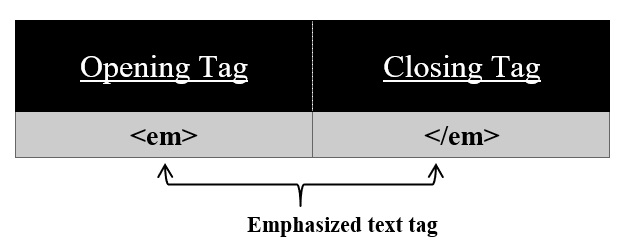

For emphasized text use <em< tag on your HTML page.
Syntax:
<em>
//content
</em>
Using this <em> tag we can display our text in italic font. <em> tag has also its corresponding </em> tag. In HTML5 <em> means stressed emphasis.
NOTE: <em> tag plays an important role when viewing the page with a screen reader. It describes the semantics (the meaning) of the text and for SEO purposes some prefer to use <em> rather than <i> tag